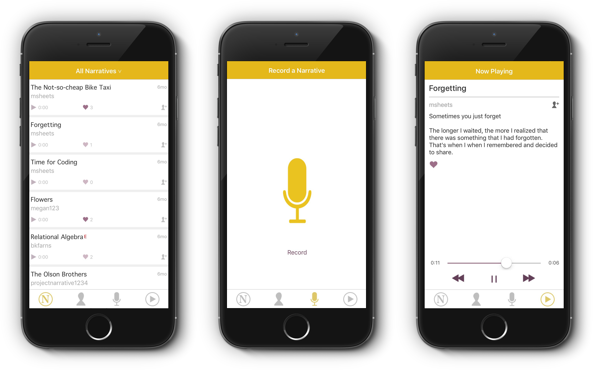

<section id="project-info">
  <div class="container">

    <div class="row">
      <div class="eight columns">
        <a href="../images/portfolio/narrative/narrative.png" target="_blank">
          
        </a>
      </div>

      <div class="four columns">
        <h2>Project Narrative</h2>
        <p>We are better off when we are connected, and we are connected when we are listening. Using audio is a way to share our stories in an authentic way.</p>
        <p>Narrative is a means of accessing the story that is inside all of us. We are the artists and the stories we tell are our art. As we access our narrative we will come to find that we are the narrators of our lives.</p>

        <p>
          <a href="http://projectnarrative.com" target="_blank">projectnarrative.com</a>
        </p>

        <a href="https://appstore.com/projectnarrative" target="_blank"></a>
      </div>
    </div>

  </div>
</section>
